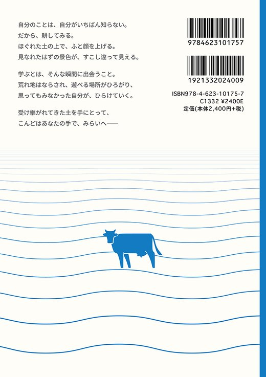

▼ すべて展開 近刊 法的思考へのログイン――トピックから学ぶリーガルマインド シリーズ：ミネルヴァ・カルティヴァ ライブラリー  三輪まどか・柳澤武［編著］A5判・並製・280ページ本体価格2,400円（+税）ISBN：9784623101757 ミネルヴァ書房 Amazon 楽天ブックス 版元ドットコム 「当たり前」を疑い、ルールを使いこなし、ときにつくり直す――法的思考（リーガルマインド）は、法律家だけのものではありません。本書は、モデル小説とプライバシー、心神喪失者の無罪、戦争中のルール、職場のハラスメント、年休とバカンス、生殖補助医療と親子、「カルト宗教」問題などの多彩なトピックをCASEとして取り上げます。法学部生はもちろん、法学部以外の大学生にも、考える楽しさを体験してもらうための入門書です。さあ、法的思考の世界にログインを。 ← 担当書籍の一覧へ